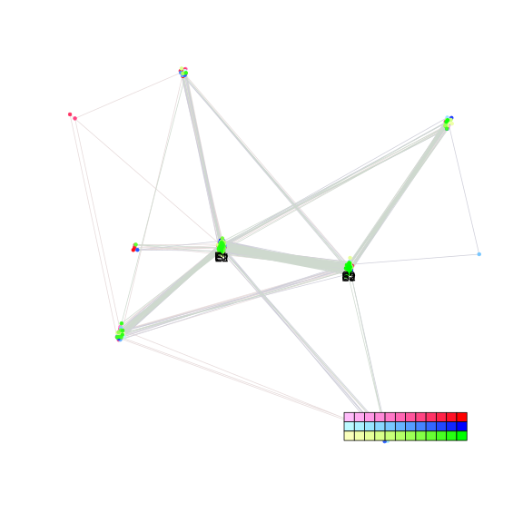
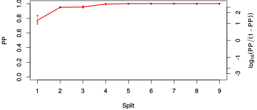
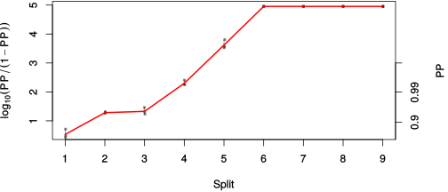

| chain # | burnin | subsample | Iterations (remaining) | command line | subdirectory | directory |
|---|---|---|---|---|---|---|
| 1 | 10000 | 1 | 90000 | bali-phy E1_AA_red3_BetaGamma_Lambda.fas -s 63563 -n BetaGamma_Lambda_c1 | BetaGamma_Lambda_c1-1 | /DATA/work/ONCOGENEVOL/database/trees/Bali-Phy/red3/E1 |
| 2 | 10000 | 1 | 90000 | bali-phy E1_AA_red3_BetaGamma_Lambda.fas -s 55893 -n BetaGamma_Lambda_c2 | BetaGamma_Lambda_c2-1 | /DATA/work/ONCOGENEVOL/database/trees/Bali-Phy/red3/E1 |
| 3 | 10000 | 1 | 90000 | bali-phy E1_AA_red3_BetaGamma_Lambda.fas -s 37435 -n BetaGamma_Lambda_c3 | BetaGamma_Lambda_c3-1 | /DATA/work/ONCOGENEVOL/database/trees/Bali-Phy/red3/E1 |
| P(data|M) = -13001.460 +- 2.687 | Complete sample: 39 topologies | 95% Bayesian credible interval: 7 topologies |

Phylogeny Distribution

| Partition support: Summary |
| Partition support graph: SVG |
| 50% consensus | Newick (+PP) | SVG | |||||
| 66% consensus | Newick (+PP) | SVG | |||||
| 80% consensus | Newick (+PP) | SVG | |||||
| 90% consensus | Newick (+PP) | SVG | |||||
| 95% consensus | Newick (+PP) | SVG | |||||
| 99% consensus | Newick (+PP) | SVG | |||||
| 100% consensus | Newick (+PP) | SVG | |||||
| MAP | Newick (+PP) | SVG | |||||
| greedy | Newick (+PP) | SVG |
{kind=link}
{kind=link}
{kind=link}
{kind=link}
{kind=link}
{kind=link}
{kind=link}
{kind=link}
Alignment Distribution
Partition 1
| Diff | Min. %identity | # Sites | Constant | Informative | ||||
|---|---|---|---|---|---|---|---|---|
| Initial | FASTA | HTML | Diff | 4.21% | 642 | 1 (0.156%) | 571 (88.9%) | |
| Best (WPD) | FASTA | HTML | AU | 33.2% | 860 | 88 (10.2%) | 443 (51.5%) |


Mixing
| burnin (scalar) | ESS (scalar) | ESS (partition) | ASDSF | MSDSF | PSRF-CI80% | PSRF-RCF |
|---|---|---|---|---|---|---|
| 1886 | 139.3 | 143.257 | 0.013 | 0.059 | 1.006 | 1.006 |
Projection of RF distances for the first 3 chains3D | Variation of split PPs across chains |
Scalar variables
| Statistic | Median | 95% BCI | ACT | ESS | burnin | PSRF-CI80% | PSRF-RCF |
|---|---|---|---|---|---|---|---|
| prior | -1077 | (-1159, -999.3) | 1939 | 139 | 909 | 1.006 | 1.004 |
| prior_A1 | -1084 | (-1164, -1007) | 1890 | 142 | 909 | 1.006 | 1.001 |
| likelihood | -1.293e+04 | (-1.299e+04, -1.288e+04) | 1855 | 145 | 1155 | 1.005 | 1.001 |
| logp | -1.401e+04 | (-1.406e+04, -1.396e+04) | 285.7 | 945 | 1886 | 1.002 | 1.002 |
| Heat.beta | 1 | ||||||
| Scale1 | 4.25 | (2.371, 6.907) | 1 | 270003 | 150 | 1 | 1 |
| S1.F.pi.A | 0.0699 | (0.06119, 0.07897) | 9.77 | 27634 | 452 | 0.9996 | 0.9961 |
| S1.F.pi.R | 0.04121 | (0.03443, 0.04826) | 8.234 | 32789 | 214 | 1 | 0.9944 |
| S1.F.pi.N | 0.03851 | (0.03257, 0.04448) | 9.724 | 27767 | 205 | 1 | 0.9966 |
| S1.F.pi.D | 0.06583 | (0.05708, 0.07496) | 9.713 | 27797 | 336 | 0.9996 | 1.004 |
| S1.F.pi.C | 0.0508 | (0.04163, 0.06052) | 8.648 | 31222 | 270 | 1 | 1.001 |
| S1.F.pi.Q | 0.04067 | (0.03465, 0.04706) | 8.539 | 31620 | 264 | 1 | 0.997 |
| S1.F.pi.E | 0.05354 | (0.04617, 0.06133) | 11.07 | 24400 | 320 | 1 | 1.002 |
| S1.F.pi.G | 0.06771 | (0.05706, 0.07926) | 89.65 | 3011 | 441 | 1 | 0.999 |
| S1.F.pi.H | 0.02687 | (0.02181, 0.03245) | 8.209 | 32891 | 291 | 1 | 1.005 |
| S1.F.pi.I | 0.04013 | (0.03356, 0.04703) | 8.822 | 30604 | 381 | 1 | 0.9946 |
| S1.F.pi.L | 0.1005 | (0.089, 0.1127) | 8.485 | 31819 | 308 | 1 | 1.006 |
| S1.F.pi.K | 0.05056 | (0.04319, 0.05828) | 8.182 | 32998 | 235 | 1 | 0.9945 |
| S1.F.pi.M | 0.02358 | (0.01888, 0.02849) | 7.966 | 33894 | 340 | 0.9998 | 1.001 |
| S1.F.pi.F | 0.0572 | (0.04837, 0.06687) | 13.52 | 19966 | 418 | 1 | 0.9959 |
| S1.F.pi.P | 0.03841 | (0.03085, 0.04633) | 16.07 | 16801 | 372 | 1 | 0.9985 |
| S1.F.pi.S | 0.06977 | (0.0613, 0.07849) | 9.183 | 29401 | 323 | 1 | 1.003 |
| S1.F.pi.T | 0.05926 | (0.05147, 0.0674) | 10.14 | 26637 | 367 | 1 | 1.004 |
| S1.F.pi.W | 0.01094 | (0.006771, 0.01556) | 8.331 | 32409 | 825 | 0.9999 | 1.005 |
| S1.F.pi.Y | 0.02746 | (0.02162, 0.03378) | 8.556 | 31558 | 277 | 1 | 0.995 |
| S1.F.pi.V | 0.06518 | (0.05643, 0.0742) | 9.848 | 27417 | 218 | 1 | 1.002 |
| I1.RS07.meanIndelLengthMinus1 | 2.005 | (1.51, 2.576) | 262.2 | 1029 | 356 | 1.001 | 1.001 |
| I1.RS07.logLambda | -3.745 | (-3.953, -3.543) | 251 | 1075 | 239 | 1.001 | 1 |
| |A1| | 818 | (791, 844) | 1452 | 185 | 1342 | 0.9714 | 1.002 |
| #indels1 | 136 | (124, 148) | 1487 | 181 | 859 | 0.9375 | 1.003 |
| |indels1| | 409 | (361, 454) | 865.4 | 311 | 372 | 0.9779 | 0.9988 |
| #substs1 | 2302 | (2275, 2326) | 677.2 | 398 | 385 | 0.9697 | 0.9858 |
| Scale1*|T| | 4.809 | (4.587, 5.033) | 46.77 | 5773 | 123 | 1 | 0.9965 |
| |A| | 818 | (791, 844) | 1452 | 185 | 1342 | 0.9714 | 1.002 |
| #indels | 136 | (124, 148) | 1487 | 181 | 859 | 0.9375 | 1.003 |
| |indels| | 409 | (361, 454) | 865.4 | 311 | 372 | 0.9779 | 0.9988 |
| #substs | 2302 | (2275, 2326) | 677.2 | 398 | 385 | 0.9697 | 0.9858 |
| |T| | 1.131 | (0.6127, 1.781) | 1 | 270003 | 128 | 1 | 1 |